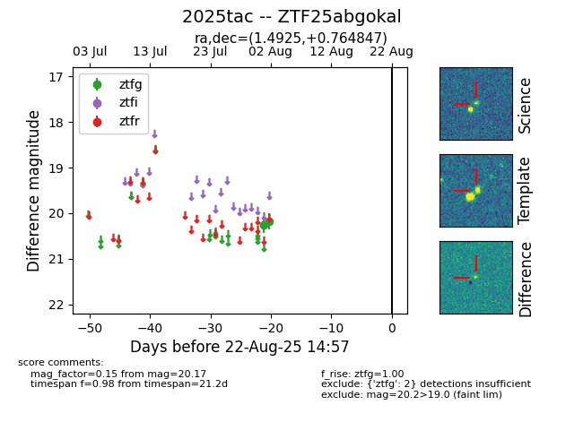

Target 2025tac at 2025-08-21 09:29, see:
FINK: fink-portal.org/ZTF25abgokal
Lasair: lasair-ztf.lsst.ac.uk/objects/ZTF25abgokal
ALeRCE: alerce.online/object/ZTF25abgokal
TNS: wis-tns.org/object/2025tac
YSE: ziggy.ucolick.org/yse/transient_detail/2025tac
alt names
ZTF25abgokal (ztf,alerce)
2025tac (tns,yse)
coordinates:
equatorial (ra, dec) = (1.4925,+0.76485)
galactic (l, b) = (99.6898,-60.03908)
photometry
last ztfg=20.17
2 ztfg detections
